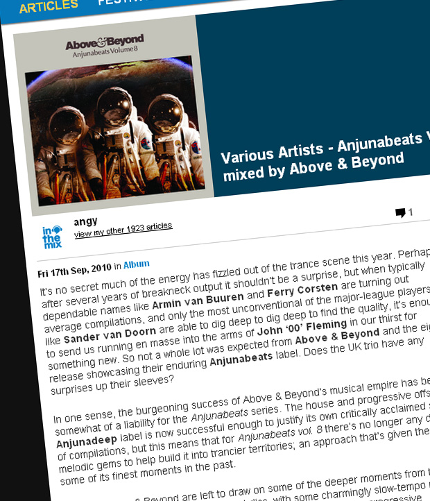

Various Artists - Anjunabeats Vol. 8, mixed by Above & Beyond
{kind=link}

It’s no secret much of the energy has fizzled out of the trance scene this year. Perhaps after several years of breakneck output it shouldn’t be a surprise, but when typically dependable names like Armin van Buuren and Ferry Corsten are turning out average compilations, and only the most unconventional of the major-league players like Sander van Doorn are able to dig deep to dig deep to find the quality, it’s enough to send us running en masse into the arms of John ‘00’ Fleming in our thirst for something new. So not a whole lot was expected from Above & Beyond and the eighth release showcasing their enduring Anjunabeats label. Does the UK trio have any surprises up their sleeves?
In one sense, the burgeoning success of Above & Beyond’s musical empire has become somewhat of a liability for the Anjunabeats series. The house and progressive offshoot Anjunadeep label is now successful enough to justify its own critically acclaimed series of compilations, but this means that for Anjunabeats vol. 8 there’s no longer any deep melodic gems to help build it into trancier territories; an approach that’s given the series some of its finest moments in the past.
Instead, Above & Beyond are left to draw on some of the deeper moments from their flagship label for the opening of the first disc, with some charmingly slow-tempo melodic tech from the likes of Duderstadt. It’s a tough task to replace the progressive perfection we heard on Anjunadeep02 earlier this year, but nevertheless, it’s still pushing out the boundaries of what we know as trance – exactly as it should. So far, so good.
Hearing an Oliver Smith record for the first time can be likened to basking in the glow of a perfect sunrise, and whether he’s crafting melodic prog or soaring trance it’s much the same. We’re also treated to another of Super8 & Tab’s unmistakably sublime house/trance fusions on Black Is The New Yellow, featuring a chopped-up vocal grab in the breakdown that’ll send shivers down your spine. In fact, the production talent on display here is of the very highest calibre, with Bart Claessen also dropping another bombastic tech-trance stunner that’ll drop your jaw the first time you hear it. Anjunabeats were wise to finally sign him exclusively to the label a few years ago, because his gift with producing achingly gorgeous tunes grows stronger by the day.
Meanwhile, Thomas Datt makes euphoric trance exactly the way it should be – with a rushing sense of the epic, but free of any contrived melodies. While there’s not nearly enough house in this opening mix, it still boasts the breadth of styles and sounds to give it the proper sense of a journey that’s been lacking in so many other recent releases.
The second disc is traditionally where Above & Beyond release the reins and jet off into dizzying build-ups and mammoth melodies, but thankfully here they’ve avoid the trap of simply laying down “stormer after stormer” like they’ve been guilty of in the past. A beautiful double-shot opening from Andrew Bayer shows the label is still capable of those sumptuous deeper moments, while shortly after, both Arty and Mat Zo prove once and for all they’re the best at crafting next-generation euphoria. Both recent additions to the label, they’re among the finest of a new wave of artists to the scene, and they show there’s still plenty of room to innovate and surprise with their contributions here. It’s a credit to the Anjunabeats stable that they’ve recognised and fostered such excellent talent.
Above & Beyond’s new single A Thing Called Love sees them reaching to recreate the magic of Alone Tonight with only partial success, while Adam Nicky’s Altara plays on an uplifting riff that’s been strummed one too many times before. Strangely enough, though, Daniel Kandi runs through identical territory immediately after with Forgive Me, but he gets it right this time. As we rocket towards the conclusion, Dan Stone’s remix of the classic Alt+F4 (featured memorably all the way back in volume three) sees him employing restraint as well as simultaneously upping the euphoria stakes, succeeding in living up to the original. With Nitrous Oxide stepping in to pitch the emotion even higher, we’re taken to the heights of euphoria in these closing moments, but it’s all the more effective because they’ve actually built towards it properly.
The Anjunabeats series might be feeling the heat from a lack of Anjunadeep material to really offer it a comprehensive focus, but in a sense, this only makes it all the more impressive that Above & Beyond have managed to turn out such an impressive installment this year, particularly in the current climate where mediocrity is becoming all too common.
It’s a carefully crafted mix of the traditional and the innovative, and shows Above & Beyond are way too clever to fall into the lazy pattern of just slamming out the anthems. Anjunabeats deserves applause for investing in the next generation of cutting-edge artists, and it means that any slight missteps here are easy to forgive. In a year where quality trance has been thin on the ground, Above & Beyond have reminded us again what that amazing rush feels like.
Anjunabeats Volume 8 is out now on Anjunabeats through Central Station Records.